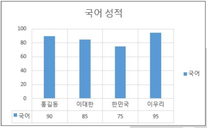
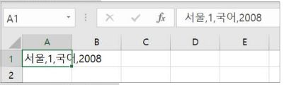
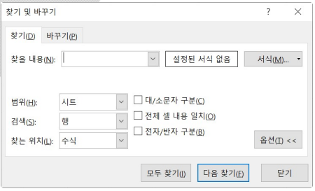
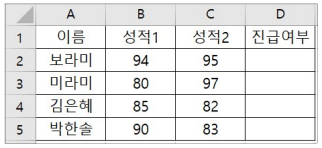
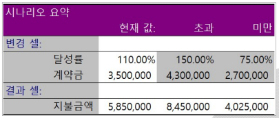

2026년 컴퓨터활용능력 2급 기출문제
제1과목 컴퓨터 일반
1. 다음 중 사물 인터넷(IoT)에 대한 설명으로 옳지 않은 것은?
[해설]
- IoT 기술은 수많은 사물 및 기기가 네트워크에 연결되기 때문에 보안 취약점이 증가하여 정보 보안 기술 적용이 까다롭고 어렵습니다.
2. 다음 중 자료 처리 방식의 발달 과정으로 옳은 것은?
[해설]
- 자료 처리 방식의 발달 순서는 '일괄 처리 시스템 → 실시간 처리 시스템 → 다중 프로그래밍/다중 처리 시스템 → 시분할 시스템 → 분산 처리 시스템' 순입니다.
3. WWW(World Wide Web)에 대한 설명으로 잘못된 것은?
[해설]
- 하이퍼텍스트 문서를 전송하기 위해 사용하는 통신 프로토콜은 HTTP이며, HTML은 하이퍼텍스트 문서를 작성하는 '웹 문서 작성 언어'입니다.
4. 다음 중 오디오 데이터와 관련된 용어에 해당하지 않는 것은?
[해설]
- 인터레이싱(Interlacing)은 이미지나 비디오 화면을 표시할 때 홀수 라인과 짝수 라인을 교대로 교차 표시하는 그래픽/영상 관련 기법입니다.
5. 다음 중 컴퓨터 범죄에 해당하지 않는 것은?
[해설]
- 인터넷 쇼핑몰의 상품 가격 비교표를 작성하는 것은 정상적인 데이터 수집 및 정보 제공 행위로 컴퓨터 범죄에 해당하지 않습니다.
6. 다음 중 Windows에서 Winkey와 함께 사용하는 바로 가기 키에 대한 설명으로 틀린 것은?
[해설]
- [Winkey] + [E]는 '파일 탐색기'를 열어주는 단축키입니다. '실행' 창을 여는 단축키는 [Winkey] + [R]입니다.
7. 다음 중 컴퓨터에서 사용하는 하드디스크의 파티션에 대한 설명으로 옳지 않은 것은?
[해설]
- 파티션을 분할하면 분할된 각 파티션마다 서로 다른 운영체제(예: Windows, Linux 등)를 독립적으로 설치할 수 있습니다(멀티 부팅).
8. 다음 중 전자우편 서비스에 대한 설명으로 옳지 않은 것은?
[해설]
- MIME(Multipurpose Internet Mail Extensions)은 텍스트 문서뿐만 아니라 웹을 통해 오디오, 비디오, 이미지, 응용 프로그램 데이터 등 멀티미디어 파일을 전송할 수 있도록 해주는 프로토콜입니다.
9. 다음 중 컴퓨터 시스템에서 사용하는 채널(Channel)에 관한 설명으로 옳지 않은 것은?
[해설]
- CPU와 주기억장치 사이의 속도 차이를 해결하는 것은 '캐시 메모리(Cache Memory)'입니다. 채널은 CPU와 입출력장치 간의 속도 차이를 해결하기 위한 입출력 전용 프로세서입니다.
10. 다음 중 하드디스크 용량이 부족할 경우의 해결 방법으로 옳지 않은 것은?
[해설]
- USB는 외부 저장 장치이므로, USB 내의 파일을 정리해도 컴퓨터 내부 하드디스크의 용량 확보에는 영향을 주지 않습니다.
11. 다음 중 1GB(Giga Byte)에 해당하는 것은?
[해설]
- 1KB = 1024 Bytes
- 1MB = 1024 × 1024 Bytes
- 1GB = 1024 × 1024 × 1024 Bytes ($1024^3$ Bytes)
12. 다음 중 한글 Windows 10의 바로 가기 키에 대한 설명으로 옳지 않은 것은?
[해설]
- 폴더 내의 모든 항목을 선택하는 단축키는 [Ctrl] + [A]입니다. [Alt] + [Spacebar]는 활성 창의 '시스템 메뉴(제어 메뉴)'를 여는 단축키입니다.
13. 다음은 무엇에 대한 설명인가?
네트워크를 통하여 전송되는 데이터 프레임은 목적지 컴퓨터의 IP 주소 외에도 네트워크 카드의 물리적인 주소인 MAC 주소를 가지고 있어야 하는데, 컴퓨터의 IP 주소만 알고 MAC 주소를 모르는 경우, IP 주소로부터 MAC 주소를 알아내는 프로토콜
[해설]
- ARP(Address Resolution Protocol)는 논리적인 IP 주소를 물리적인 MAC 주소로 변환해 주는 프로토콜입니다. 반대로 MAC 주소를 IP 주소로 바꾸는 것은 RARP입니다.
14. 다음 중 가전제품, PDA 등에 사용되는 임베디드 운영체제로 가장 적절한 것은?
[해설]
- 윈도우 CE(Windows CE)는 모바일 기기, 소형 가전 및 임베디드 시스템용으로 개발된 소형 OS입니다.
15. 다음 중 컴퓨터에 디스크를 연결하는 전용 인터페이스 방식에 해당되지 않는 것은?
[해설]
- USB는 범용 직렬 버스로, 다양한 주변장치를 다목적으로 연결하는 범용 인터페이스이며 디스크 전용 연결 방식이 아닙니다. (IDE, EIDE, SCSI는 내/외부 디스크 연결 전용 표준입니다.)
16. 다음 중 한글 Windows 10에서 [작업 표시줄]의 바로 가기 메뉴에 있는 [도구 모음]에서 선택할 수 없는 것은?
[해설]
- 작업 표시줄의 [도구 모음] 메뉴에는 '주소', '링크', '바탕 화면', '새 도구 모음' 등이 포함되며, '알림 영역'은 별도의 설정 항목으로 분류됩니다.
17. 다음은 [설정] → [개인 설정]에 관한 설명이다. 다음 중 옳지 않은 것은?
[해설]
- 모니터 해상도 및 방향 설정은 [설정] → [시스템] → [디스플레이] 메뉴에서 수행합니다.
18. 다음 중 정보 보안을 위협하는 유형에 대한 설명으로 옳지 않은 것은?
[해설]
- '가로채기(Interception)'는 전송되는 데이터를 제3자가 도청하거나 몰래 몰래 몰래 훔쳐보는 기밀성 침해 행위입니다. 회선을 절단하는 것은 '가로막기(Interruption, 가용성 침해)'에 해당합니다.
19. 다음 중 차세대 웹 표준으로 텍스트와 하이퍼링크를 이용한 문서 작성 중심으로 구성된 기존 표준에 비디오, 오디오 등의 다양한 부가 기능을 추가하여 최신 멀티미디어 콘텐츠를 ActiveX 없이도 웹 서비스로 제공할 수 있는 언어는?
[해설]
- HTML5는 액티브X(ActiveX)나 플러그인 없이도 오디오, 비디오 등의 멀티미디어를 웹 페이지에서 직접 재생할 수 있게 만든 차세대 표준 웹 언어입니다.
20. 다음 중 인트라넷(Intranet)에 관한 설명으로 옳은 것은?
[해설]
- 인트라넷은 기업 내부 구성원만 이용 가능한 네트워크 시스템입니다. (참고: 협력 업체와 공유하는망은 엑스트라넷(Extranet)입니다.)
제2과목 스프레드시트 일반
21. 다음 중 매크로에 관한 설명으로 옳지 않은 것은?
[해설]
- 매크로 기록 시 키보드로 입력한 제어 및 키 입도 기록되며, 마우스 동작의 경우 리본 메뉴나 셀 선택 등은 기록되지만 워크시트 내부에서의 특정 드래그 동작 등은 일부분 제약이 존재합니다. 무엇보다 키보드 작업도 정상 기록되므로 3번은 잘못 설명된 문장입니다.
22. 다음 중 입력 데이터에 주어진 표시 형식으로 지정한 경우 그 결과가 옳지 않은 것은?
[해설]
- `#` 기호는 유효하지 않은 0을 출력하지 않으므로, 데이터 `0`에 `#"Kg"` 표시 형식을 적용하면 '0'이 생략되어 `Kg`만 표시됩니다. (0을 나타내려면 `0"Kg"` 형식을 써야 함)
23. 다음 중 워크시트 작업 및 관리에 대한 설명으로 옳지 않은 것은?
[해설]
- 열 머리글 경계선을 더블클릭하면 해당 열에서 가장 긴 데이터의 길이에 맞추어 '자동 맞춤'이 실행되는 것이며, 기본 너비로 되돌아가는 것이 아닙니다.
24. 다음과 같이 수식을 입력할 경우 결과로 표시되는 것은?
=LEFT(MID(LOWER("GOOD MORNING"), 3, 6), 2)
[해설]
- 1. LOWER("GOOD MORNING") → 소문자 변환: "good morning"
- 2. MID("good morning", 3, 6) → 3번째 글자부터 6글자 추출: "od mor"
- 3. LEFT("od mor", 2) → 왼쪽에서 2글자 추출: "od"
25. 다음 중 피벗 테이블에 대한 설명으로 옳지 않은 것은?
[해설]
- 피벗 테이블을 삭제하면 연동되어 있던 피벗 차트는 삭제되지 않고 '일반 차트'로 전환됩니다.
26. 다음 중 데이터 정렬에 대한 설명으로 옳지 않은 것은?
[해설]
- 정렬하려는 범위 내에 크기가 서로 다른 병합된 셀이 포함되어 있으면 정렬 기능을 수행할 수 없고 오류 창이 나타납니다.
27. 다음 중 셀 참조에 대한 설명으로 옳지 않은 것은?
[해설]
- 동일한 통합 문서 내의 다른 시트는 물론, 파일 경로를 지정하여 다른 통합 문서의 셀도 얼마든지 참조할 수 있습니다.
28. 다음 차트에 표시되지 않은 구성 요소는?

[해설]
- 제시된 그림에는 차트 하단에 표 형태로 데이터 테이블이 표시되어 있고, 범례 및 주 눈금선이 포함되어 있으나 각 막대 그래프 위나 옆에 수치가 직접 적히는 '데이터 레이블'은 설정되어 있지 않습니다.
29. 다음 중 필터에 대한 설명으로 옳지 않은 것은?
[해설]
- 필터링 결과로 인해 필터에 의해 숨겨진 행(레코드)은 정렬 대상에서 제외되어 이동하지 않거나 유지됩니다. 숨겨진 레코드가 정렬에 포함되지 않습니다.
30. 다음 중 수식의 실행 결과가 옳은 것은?
[해설]
- INT(-7.4)는 -7.4보다 크지 않은 가장 작은 정수를 반환하므로 -8이 맞습니다.
- MOD(-7, 4) = 1 (나누는 수 4가 양수이므로 결과 부호는 양수)
- POWER(2, 3) = $2^3$ = 8
- TRUNC(-8.6) = 소수점 이하 버림으로 -8
31. 다음 중 조건부 서식에 대한 설명으로 옳지 않은 것은?
[해설]
- 조건부 서식은 셀의 값이 변경되면 실시간으로 다시 평가되어, 조건에 만족하지 않게 변경될 경우 서식이 자동으로 해제(원래 서식으로 복원)됩니다.
32. 다음 중 사용자 지정 목록에 대한 설명으로 옳지 않은 것은?
[해설]
- 사용자 지정 목록 정렬 방식은 '값이 입력된 텍스트 목록'을 기준으로 순서를 정할 때 사용하는 방식입니다. 정렬 기준이 색상(셀 색, 글꼴 색)이나 아이콘일 때는 사용자 지정 목록을 적용할 수 없습니다.
33. 다음 중 날짜 및 시간 데이터에 관한 설명으로 옳지 않은 것은?
[해설]
- 오늘 날짜 입력 단축키는 [Ctrl] + [;] 이며, 현재 시간 입력 단축키는 [Ctrl] + [Shift] + [;] (즉, [Ctrl] + [:]) 입니다. 단축키 역할 설명이 서로 뒤바뀌어 옳지 않습니다.
34. 다음 중 '페이지 나누기' 기능에 관한 설명으로 옳지 않은 것은?
[해설]
- '페이지 나누기 미리 보기' 화면 상태에서도 셀 선택, 데이터 입력, 수정, 삭제 등의 편집 작업을 정상 수행할 수 있습니다.
35. 다음 시트에서 [A1] 셀에 있는 텍스트를 쉼표(,)를 기준으로 [A1:D1] 영역에 분리하여 표시하려고 할 때 사용할 적합한 기능은?

[해설]
- 한 셀에 들어있는 문자열을 구분 기호(쉼표, 탭, 공백 등)를 기준으로 여러 열(셀)에 나누어 배치할 때는 [데이터] → [텍스트 나누기] 기능을 사용합니다.
36. 다음 중 찾기 및 바꾸기에 대한 설명으로 옳지 않은 것은?

[해설]
- 수식이 계산된 '결과 값'에서 문자열을 검색하려면 찾는 위치를 '수식'이 아닌 '값'으로 선택해야 합니다. '수식'을 선택하면 셀에 입력된 원본 수식 텍스트 자체에서 검색합니다.
37. '성적1' 필드와 '성적2' 필드의 값이 모두 90 이상이면 '진급여부' 필드에 "진급", 둘 중 하나만 90 이상이면 "대기", 나머지는 공백으로 표시하는 수식으로 옳은 것은?

[해설]
- COUNTIF(B2:C2, ">=90")은 B2:C2 영역 중 90 이상인 셀의 개수를 구합니다.
- 개수가 2개이면 2개 모두 90 이상이므로 "진급"을 출력하고, 개수가 1개이면 "대기", 나머지는 공백("")을 출력해야 하므로 2번 수식이 올바릅니다.
38. 다음 중 아래 그림의 시나리오 요약 보고서에 대한 설명으로 옳지 않은 것은?

[해설]
- 시나리오 분석이 정상 작동하려면 결과 셀(지불금액)은 반드시 변경 셀(달성률, 계약금)을 참조하는 수식으로 작성되어 있어야 변경에 따른 결과값이 반영됩니다.
39. 다음 중 [페이지 설정] 대화상자를 이용한 머리글/바닥글 편집에 대한 설명으로 옳지 않은 것은?
[해설]
- 머리글/바닥글에서 `&` 문자 자체를 텍스트로 나타내고 싶을 때는 `&&`와 같이 앤퍼샌드 기호를 두 번 연속으로 입력해야 합니다.
40. 다음 중 데이터 통합에 대한 설명으로 옳지 않은 것은?
[해설]
- 데이터 통합 시 통합할 참조 영역의 개수에는 제한(3개 제한 등)이 없으며 여러 개 영역을 자유롭게 추가할 수 있습니다.